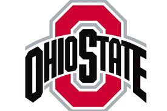

<DOCTYPE!>
<HTML>
  <head>
    <script>
    function myFunction(){
      var x = document.getElementById("myImage");
      if (x.style.display === "none") {
        x.style.display = "block";
      } else {
        x.style.display = "none";
      }
    }
    function myFunction2(){
      var x = document.getElementById("myImage2");
      if (x.style.display === "none") {
        x.style.display = "block";
      } else {
        x.style.display = "none";
      }
    }
    function myFunction3(){
      var x = document.getElementById("myImage3");
      if (x.style.display === "none") {
        x.style.display = "block";
      } else {
        x.style.display = "none";
      }
    }
    </script>
    <body style="background-color: black;"><div id = "text" style = "color: red;">
<h1>The Ohio Sate University</h1><br/>
<button onclick="myFunction();">Logo</button><br/>


<h1>Team</h1>
<button onclick="myFunction2();">Team</button><br/>
<br/>
<a>Ohio State is loaded and has had one of the greatest seasons in their history as a football team.  They have three guys who could all go up for the Heisman and J.K. and Chase will most likely all go in the top 10 in the NFL Draft.  Justin Fields has 47 total touchdowns and won Big 10 top player of the year
  He is not eligble for the 2019 Draft.  Chase Young is a pure beast who will go top 3 and J.K. Dobbins has 11 touchdowns and 1,242 yards.  Altough 2nd they are for sure a favorite to win the National Championship.  OSU will play Clemson in the Fiesta Bowl.<a/>

<h1>Ohio Stadium</h1>
<button onclick="myFunction3();">Ohio Stadium</button><br/>
<br/><br/>
<a>Mel Kiper, Jr. ranked Ohio Stadium second in atmosphere in 2002, behind the Army–Navy Game, and quoted Beano Cook in saying "There is nothing that beats when the Ohio State Marching Band and the sousaphone player dots the 'i' for Script Ohio." [13] The crowd attending these home games is known for creating harsh and difficult environments for opponents. University of Iowa coach Hayden Fry complained after a 1985 loss that the fans were too loud for his quarterback, Chuck Long, to call plays and suggested sound meters be used to gauge the noise level, penalizing home teams if there was too much noise. <a/><br/><br/>
  <iframe width="560" height="315" src="https://www.youtube.com/embed/F9HIM72Rj5g" frameborder="0" allow="accelerometer; autoplay; encrypted-media; gyroscope; picture-in-picture" allowfullscreen></iframe>
